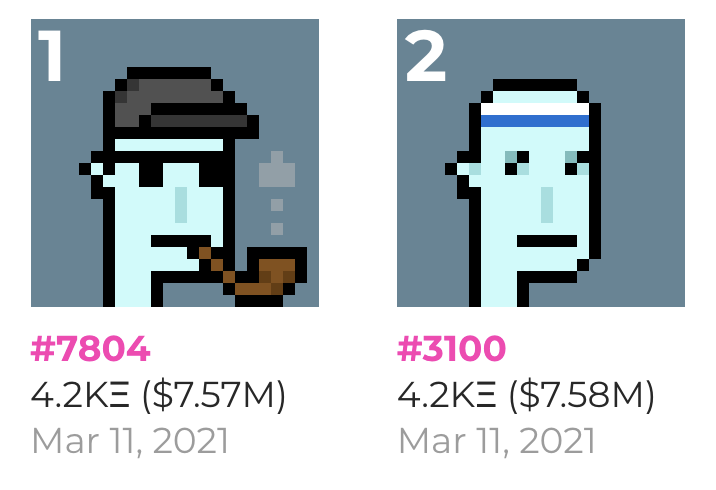

I. Qu'est-ce qu'un NFT ?
Les NFTs, Non Fungible Token(s), ou littéralement jeton non fongible en français, sont au même titre que la cryptomonnaie une révolution permise par la blockchain.
a) Le fonctionnement des NFTs
Pour comprendre leur utilité, il faut d'abord connaître la notion de fongible.
Une chose non-fongible est unique. Exemple : la Mona Lisa de Léonard de Vinci. Vous pouvez avoir une copie parfaite dans votre salon, mais le seul véritable exemplaire se trouve au Louvre.
Un NFT est un jeton numérique non reproductible, car il possède un certificat ancré sur la blockchain qui prouve son authenticité, ainsi que l'identité de son détenteur.
- Une simple image ou œuvre d'art numérique
- Une place de concert ou un billet d'événement
- Un compte de jeu vidéo ou un skin
- Un passeport sanitaire (empêchant les fraudes)
- Des documents d'identité, permis, titres de propriété...
La révolution de cette technologie réside dans le fait qu'un NFT possède un certificat de propriété infalsifiable, puisque inscrit sur une blockchain. C'est donc un tout nouveau moyen de prouver et d'assurer l'authenticité et la propriété d'un objet.
b) Quelques exemples de collections de NFTs connus
Il est nécessaire pour votre culture blockchain de connaître les principales grandes collections de NFTs.
👾 CryptoPunks
Collection de 10 000 personnages pixelisés 2D, ayant des caractéristiques et un style propre qui les rend uniques. Chaque CryptoPunk possède des attributs combinables : casquette, pipe à tabac, boutons, etc.
🦍 Bored Ape Yacht Club (BAYC)
Collection de 10 000 singes aux traits uniques. Chaque singe possède des caractéristiques propres : forme de bouche (émotion), casquette, bandana, lunettes de soleil, etc.

Où trouver des NFTs ? Consultez le site OpenSea, le plus gros marketplace de vente et d'achat de NFTs.
II. Un exemple de projet utilisant les NFTs : Ternoa
Puisque je vous parle de NFTs, je me dois de vous toucher un mot à propos du projet Ternoa et de sa cryptomonnaie le CAPS.
Ternoa est un projet très prometteur de blockchain pour les NFTs, mais a surtout créé un concept de NFTs qui pourrait s'avérer tout aussi révolutionnaire : les Secrets NFTs.
💡 Cas d'usage innovants
- Cadeaux d'anniversaire : Vous paramétrez une date et une heure, vous envoyez le NFT à un proche, et il se dévoilera automatiquement à cette date, révélant ainsi son contenu.
- Métaverse : Ce procédé serait extrêmement utile pour débloquer du contenu progressivement dans des environnements virtuels.
- Héritage et transmission : C'est la fonction la plus innovante. En paramétrant votre testament en Secret NFT, avec votre décès comme condition de déverrouillage, le testament serait dévoilé automatiquement lors de votre mort. Puisque c'est un NFT, il serait infalsifiable, sûr et identifié comme le vôtre, rendant toute réécriture impossible par un membre mal intentionné.
III. Les normes NFTs
Lorsque l'on déploie un token, qu'il soit fongible ou non, il y a des règles ainsi que des caractéristiques claires et établies : on appelle cet ensemble les normes.
📋 Tableau des normes principales
Exemple concret : Si un token est ERC-20, alors il est Ethereum compatible.
Pour un token non fongible (NFT), la norme diffère car son utilisation n'est pas la même : on utilise la
norme ERC-721.
Pour créer une collection de NFTs sur Binance, les développeurs devront soumettre leur code à la norme
BEP-721, qui diffère donc de celle d'Ethereum. Pour Solana, on utilisera la norme adéquate
qui se nomme norme SPL. Ainsi de suite pour toutes les blockchains.